Tasks
Milestone is an important tool for project management and achieving set goals. A Milestone is a set of Tasks that must be completed to reach a key stage in the project.
The participants include:
Assigners who are responsible for task completion; Reviewers who check for accuracy; Managers who create and manage the Milestone and break it down into Tasks.
Milestone is used to track progress, identify potential issues, and adjust plans as needed. It also helps maintain team motivation and ensures timely and budgeted project implementation.
Once all Tasks in the Milestone are completed and Reviewers verify their accuracy, the Milestone will be completed. Each team member who completes Tasks within the Milestone will receive a reward according to predefined distribution rules.
Create Milestone
To create a Milestone, go to the Tasks tab and click Create milestone
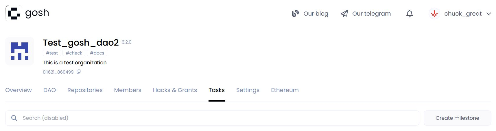
Then you need to fill in the Milestone conditions:
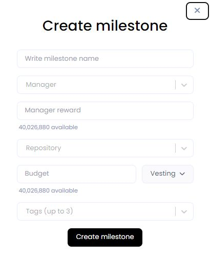
-
Write the Milestone name.
-
Write the username of the Manager who will lead the Milestone execution process.
-
And specify the Manager reward - the amount of tokens he will receive upon completion of the Milestone.
Info
The maximum quantity of tokens from the DAO reserve available for distribution is indicated for reference.
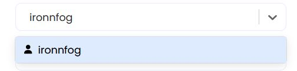
- Select the Repository where the pull requests will be created based on the results of work on this Milestone.
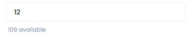
- Specify Budget - the amount of tokens that will be paid from the DAO reserve to its execution Assigners and Reviewers.
Attention
The total Milestone budget consists of the Budget listed here and the Manager reward
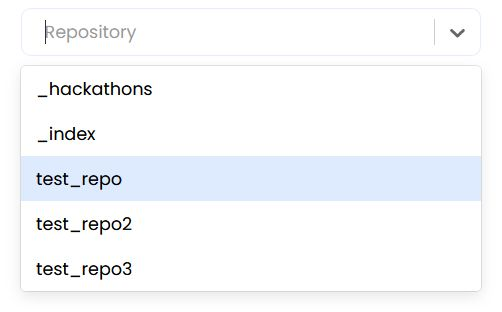
- Select Vesting - rules for governing the transfer of tokens at the disposal of the participants in equal portion.
Lock period (cliff) - the period after which the reward payments will begin.
The countdown will start after accepting the proposal about completing the Milestone.
Vesting period - the period during which remuneration will be paid to contractors in equal parts.
For example, lock - 12 months, vesting - 20 months.
Warning
For the investment scheme to be correct, the Milеstone budget must be a multiple of the number of months of investment.
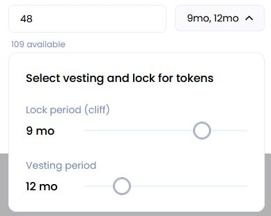
- By using up to 3 relevant keywords separated by spaces as tags, you can easily find and filter specific Milestone later on.
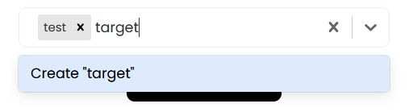
After filling in all the conditions, click Create milestone
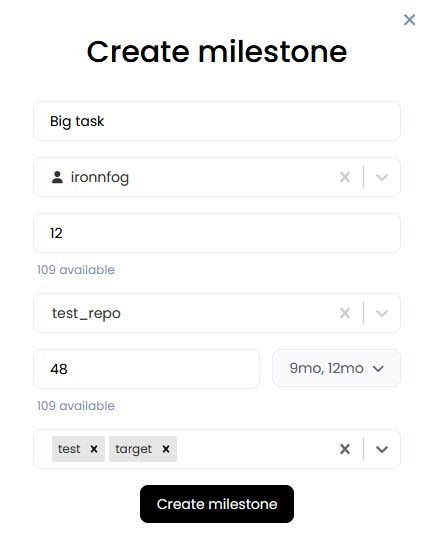
After creating the proposal, you will be redirected to the DAO tab on the event page.
Inside the proposal you will be able to see all the conditions of the Milestone. In the table you can see the period since which month and in what parts the payments will be made to Milestone participants.
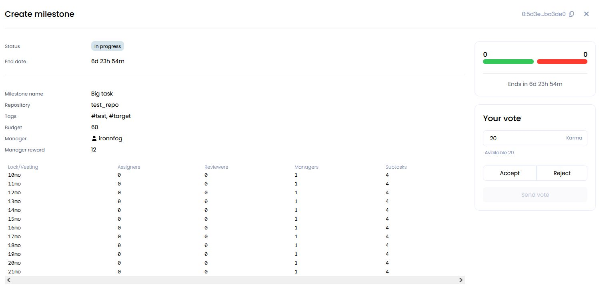
Info
When creating the Milestone the tokens (Budget) from the DAO-reserve are written off and reserved on the Task-contract.
After accepting the proposal, the Milestone will appear in the list on the Tasks tab with the status In progress.
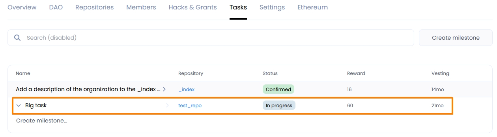
Important!
Each participant of the DAO can create a Milestone, but only the Manager assigned to this milestone can add Tasks to it.
Plan out what tasks your Milestone will consist of. Each task is assigned separately.
To add Tasks to the Milestone, open it by clicking on the one you need in the list. Then click the Add task...
To add Tasks to your Milestone, simply open the Milestone by clicking on the one you want in the list.
Then, click the "Add task..." button.
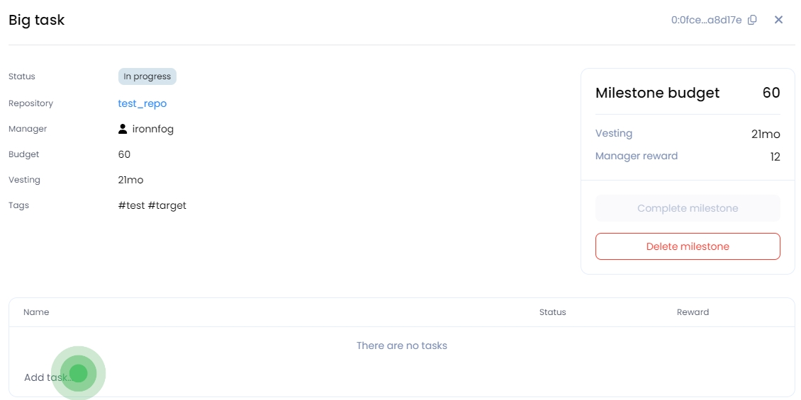
A window will open up where you can enter the task details. Make sure the name of the Milestone and the Repository where materials for the solution are collected are correct.
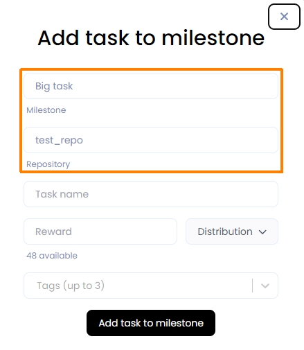
Enter the Task name.
A Reward will be given for each Task completed, and Tags will be added for quick navigation.
At the same time, you can decide on the number of tokens that the Task executor (Commit author for accepted merge), the reviewer and the manager will receive if they work on the Task.
To do this, click on the Distribution
Commit author - the person who executes the Task.
Reviewer - the person who checks the correctness of the Task.
Manager - the person who manages the Task execution process.
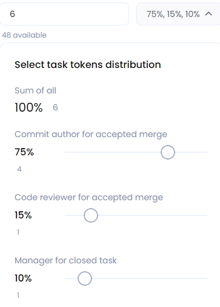
Info
If the shares are not used, they will be returned to the DAO's reserve.
After completing the filling, click Add task to milestone
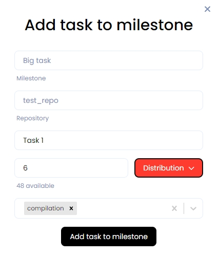
A Milestone with Tasks will look like this:
Inside the Task you will be able to see all the conditions.
In the table you can see the period starting from which month and in which parts the payment will be made to the Task executor.
Vesting and lock periods as in Milestone.
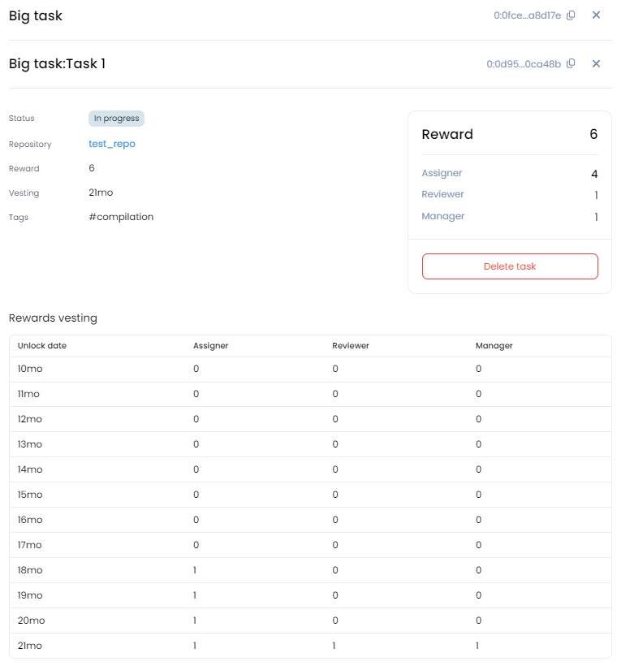
Any member of the Dao can complete the Task and receive a reward. To do this, he needs to create a Branch in the Repository specified in Milestone, commit all files with the solution and create and merge pull request
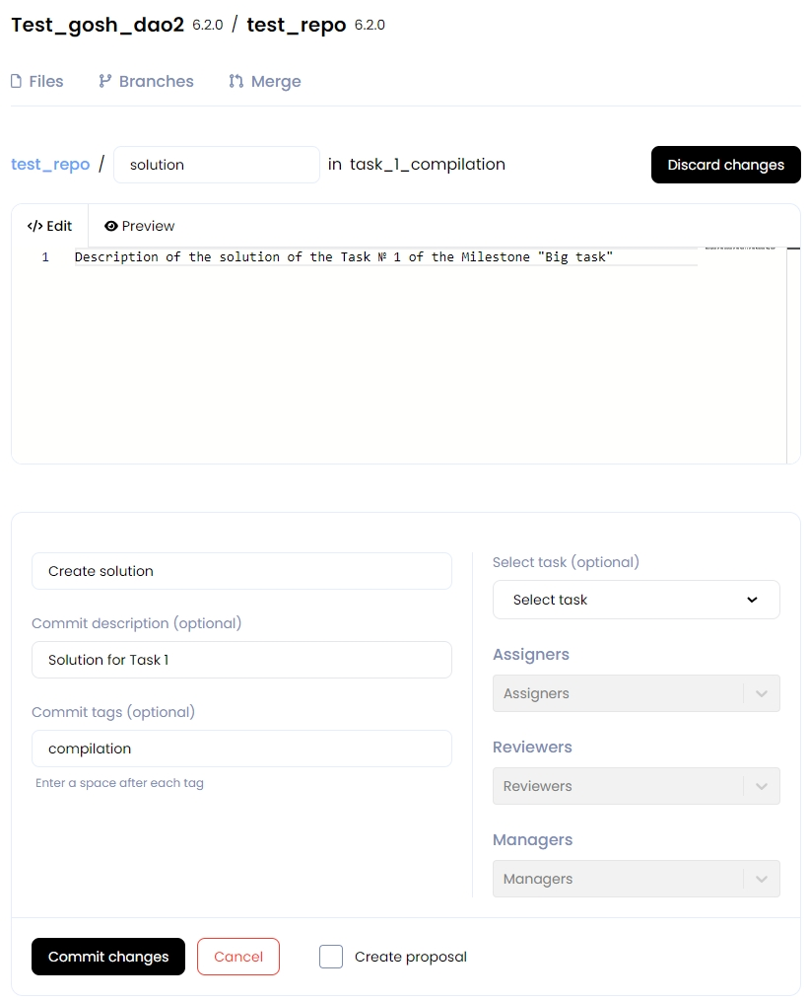
For each file, select the task to which it belongs:
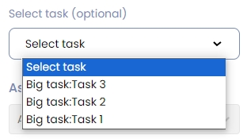
And also enter the names of those who worked on this Task
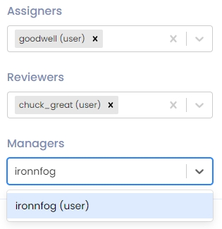
And click Commit changes
Warning
If a task has been selected, then a proposal is required.
Select the appropriate checkbox.
After the file has been created, the extraction request will await the reviewer's evaluation and approval of the proposal:

Then, after the reviewer send the solution, it will be possible to vote for the proposal.
When the pull request is accepted, the Task status will change to Confirmed.
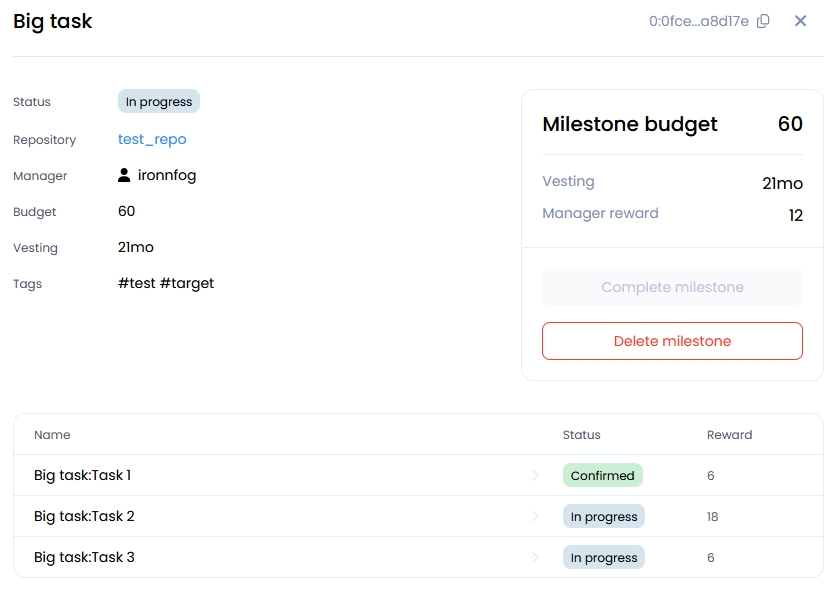
Deletе Milestone
To delete a Milestone, go to it on the Tasks tab, open it by clicking on the one you need in the list. Then click to Delete milestone

After creating a proposal about deleting a Task, you will be redirected to the event tab Dao.

When the proposal is accepted, the Task will be deleted.
The tokens allocated for this Task will be returned to the DAO reserve.